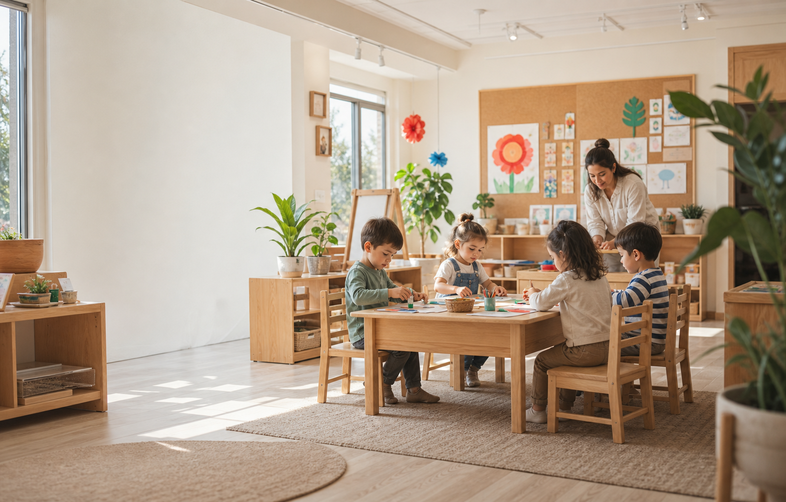

Oyun temelli gelişim
Çocuğun merakını, güven duygusunu ve sosyal gelişimini aynı ortamda destekliyoruz.
 Tomurcuk Kids
Tomurcuk Kids
Denizli kreş · çocuk oyun ve etkinlik evi
Çocukların özgürce oynadığı, merak ettiği ve kendi ritminde filizlendiği; psikolog eşliğinde güvenli bir çocuk dünyası.

Çocuğun merakını, güven duygusunu ve sosyal gelişimini aynı ortamda destekliyoruz.
Kurucu Yusuf Erol'un uzmanlığıyla çocukların duygusal ve davranışsal ihtiyaçlarına duyarlı ilerliyoruz.
Tam gün, yarım gün ve ebeveyn katılımlı atölyelerle aile düzenine uygun seçenekler sunuyoruz.
16 aydan 6 yaşa uzanan programlarımız; çocuğun yaşına, ihtiyacına ve ailenin günlük düzenine göre şekillenir.
TANIŞALIM
Ücretsiz ön görüşmede sizi dinleyelim, çocuğunuz için uygun programı birlikte değerlendirelim.
Mehmet Akif Ersoy Mah.
Yasemin Cad. No:9/A
Merkezefendi / Denizli
Albayrak Meydanı yakınında. Adliyeden meydana gelirken Miş Miş Kuruyemiş'ten sağa dönün, 300 metre aşağıda.